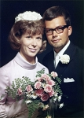
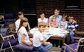
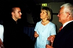
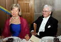

Kerstin Margareta Lennerstrand
Med Dr, Fil. Dr. i Biologi/Kemi, Fil.mag. vid Stockholms univ. (kemi, botanik, zoologi).
| Far: | Åke Harald Olaus Olsson Lennerstrand (1907 - 1997) |
|---|
| Mor: | Signe Margareta Fredrika Schüldt (1910 - 2002) |
|---|
| Född: | 1945-09-27 Vänersborg, Älvsborgs län. | |
|---|
| Disputation: | 2000-09-22 Karolinska Institutet, Hörsalen, plan 4, Novum, Huddinge, Stockholm. [1] | Disputation: Virologi. Doktorsavhandling: The role of the capsid protein in Semliki Forest virus assembly. ISBN: 91-628-4298-6 Diss: 00:412 |
|---|
| Vigsel: | 1969-07-19 Bromma kyrka, Bromma fs, Stockholm. |
|---|
| Levde: | 1971 Trångsund, Huddinge fs, Huddinge kn. [2] |
|---|
| Levde: | 1991 Tattby 31:20, Örtagårdsv 6, Saltsjöbaden, Saltsjöbadens fs, Nacka kn. [3] |
|---|
| Levde: | 2008 S:t Johannesgatan 31 B 5tr, Uppsala. [4] |
|---|
| Levde: | 2012 S:t Johannesgatan 31 B lgh 5tr 1501, Uppsala. [4] |
|---|
| Barn: |
|---|
| Eva Kerstin Margareta Forsell Berre (1971 - ) |
| Erik Arne Forsell (1975 - ) |
Noteringar
Kerstin* Margareta föddes i Vänersborg 1945-09-27 på lasarettets BB. Hon började i Bromma läroverk och avlade studentexamen där 1954. Samma år inskrevs hon vid Stockholms Universitet och avlade filosofie magisterexamen 1969 i kemi, botanik och zoologi. Lärarhögskolan i Stockholm genomgick hon i anslutning till den akademiska examen. Åren 1984-1986 bevistade hon laboratoriassistentkursen vid Institutet på Lindhangensgatan.
Kerstin gifte sig 1969-07-19 i Bromma kyrka med Kurt Arne* Forsell, född i Boliden 1942-07-16.
2000-09-22
Karolinska Institutet (KI)
Disputation: Virologi
Doktorsavhandling: The role of the capsid protein in semliki forest virus assembly
Kerstin Forsell, fil. mag.
Opponent: Professor Ralf Pettersson, Ludwiginstitutet för cancerforskning i Stockholm (LICR)
Tid: 22 sept, 09.30
Plats: Hörsalen, plan 4, Novum, Huddinge
Källa: Åke Lennerstrand, Bromma, Stockholm; Jan Fredman, Burträsk
Personhistoria
| Årtal | Ålder | Händelse |
|---|
| 1945 |
|
Födelse 1945-09-27 Vänersborg, Älvsborgs län |
| 1969 |
23 år |
Vigsel Företagsledare Kurt Arne Forsell 1969-07-19 Bromma kyrka, Bromma fs, Stockholm |
| 1971 |
|
Levde Företagsledare Kurt Arne Forsell 1971 Trångsund, Huddinge fs, Huddinge kn [2] |
| 1971 |
25 år |
Dottern Eva Kerstin Margareta Forsell Berre föds 1971-09-15 Skellefteå, Sankt Olovs fs, Skellefteå stad [3] |
| 1975 |
29 år |
Sonen Erik Arne Forsell föds 1975-09-21 Kumla fs, Örebro län [3] |
| 1991 |
|
Levde Företagsledare Kurt Arne Forsell 1991 Tattby 31:20, Örtagårdsv 6, Saltsjöbaden, Saltsjöbadens fs, Nacka kn [3] |
| 1997 |
51 år |
Fadern Åke Harald Olaus Olsson Lennerstrand dör 1997-01-17 Roslinv 9, Bromma, Bromma fs, Stockholms stad [5] |
| 2000 |
54 år |
Disputation 2000-09-22 Karolinska Institutet, Hörsalen, plan 4, Novum, Huddinge, Stockholm [1] |
| 2002 |
56 år |
Modern Signe Margareta Fredrika Schüldt dör 2002-02-23 Värtavägen 61, Täby, Täby fs, Täby kn [6] |
| 2008 |
|
Levde Företagsledare Kurt Arne Forsell 2008 S:t Johannesgatan 31 B 5tr, Uppsala [4] |
| 2012 |
|
Levde Företagsledare Kurt Arne Forsell 2012 S:t Johannesgatan 31 B lgh 5tr 1501, Uppsala [4] |
Dokument
Källor
| [1] | http://diss.kib.ki.se/2000/91-628-4298-6/ |
| |
| | |
| [2] | Mtl Stockholms stad och län 1971 |
| |
| | |
| [3] | Mantalslängd 1991, Stockholms län |
| |
| | |
| [4] | https://www.ratsit.se/sok/avancerat/person |
| |
| | |
| [5] | RTB 97 / SPAR 92f / SPAR 97 |
| |
| | |
| [6] | man91 / RFV 06 |
| |
|
|  |
| 1967-07-19. Brudparet Kerstin Lennerstrand och Arne Forsell. Vigsel i Bromma kyrka, Stockholm. Foto: Beckman, Vällingby, Stockholm. |
| |
 |
| 1969-07-19. Brudparet Kerstin Lennerstrand och Arne Forsell flankeras av föräldrarna Åke och Margareta Lennerstrand t.v. och Birgit och Birger Forsell t.h. utanför Bromma kyrka. |
| |
|
| 1969-07-19. Yngve Lennerstrand, Ulla-Stina Fredman, Kerstin Lennerstrand Forsell och Jan Fredman tar för sig av bröllopsbuffén i brudens föräldrahem i Bromma. |
| |
|
| Ulla-Stina, Kerstin, Birgit, Eva, Peter, Skuthamn, Piteå. |
| |
|  |
| Kerstin, Ulla-Stina, Jan, Maria, David, Peter, Eva och Erik, Saltsjöbaden, Nacka. |
| |
 |
| Kerstin, Ulla-Stina, Jan, Maria, David, Peter, Eva och Erik, Saltsjöbaden, Nacka. |
| |
|
| Maria, David, Peter, Kerstin, Erik och Eva, Klubbgärdet, Piteå |
| |
|
| David och Peter skymda, Kerstin, Maria, Eva och Erik, Klubbgärdet, Piteå. |
| |
|
| 2009. Maria, Erik, Kerstin och Ulla-Stina. Minnesstund. |
| |
|
| 2009. Peter, Erik, Kerstin och Maria. Minnesstund. |
| |
|  |
| 2009. Peter Fredman, Kerstin och Arne Forsell. |
| |
|  |
| 2009. Kerstin och Arne på fest med OD. |
| |
|
| (Julen 2010). Kerstin och sonen Erik. |
| |
|
| (Påsken 2011). Kerstin och dottern Eva. |
| |
|
| (Påsken 2011). Kerstin och familjen Berre - Caroline, Daniel, Eva och Loik. |
|


{kind=link}
{kind=link}
{kind=link}
{kind=link}
{kind=link}
{kind=link}
{kind=link}
{kind=link}
{kind=link}
{kind=link}
{kind=link}
{kind=link}
{kind=link}